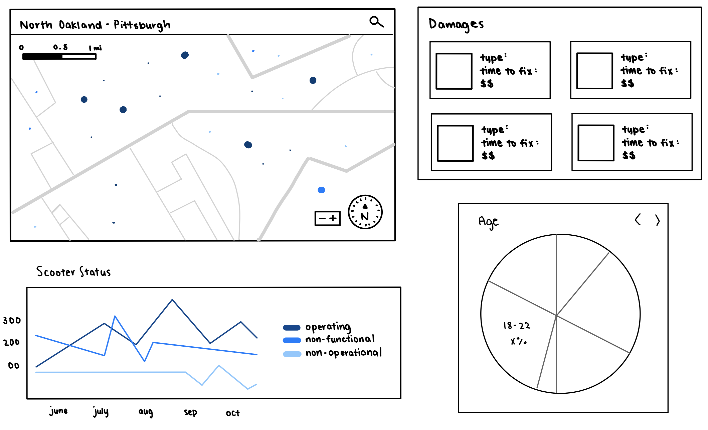

Research
Personas
Design a dashboard and ensure it meets the needs of two personas: the data analyst and the policy analyst. Focus on managing and organizing data as a design material, producing a dynamic design that allows viewers to see context at a glance and draw detail from a focus area, designing with motion to signal changes in data, and integrating a user control.
Affinity Diagram
To better understand our personas and organize the data samples from Spin, our team created an affinity diagram based on facts and insights extracted from personas and data. We looked at our personas' perspectives, needs, and goals and thought about what questions they held and what data they might need.

Ideation
Current vs Future State Models
Next, we created a model of the current state (pre-dashboard) and imagined what a dashboard would change in a preferred future (a new world with the dashboard).
The current state shows the limitations to how an assortment of personas are forced to understand the system and the relationships they have with each other. We marked what data they currently have, as well as their skillsets and goals. The future state includes new data that can help them better fulfill their roles and goals, as well as new relationships that the personas can have as a result of this additional data. We also included new insights that they could draw and actions they could take.

Prototyping
Initial Hand-Drawn Sketches
We began our prototyping by sketching several individual elements of the dashboard and looking at how these individual elements might come together into a single display that provides context and focus. The elements we chose to focus on were: a map to indicate scooter location, damage data, scooter status, and user demographics.
After going through critique, we decided to focus on a map displaying scooter usage, user demographics and behavior, and customer reviews.

Mid-Fidelity Digital Prototype
The next step of our prototyping was transferring our ideas onto a digital format on Figma. We specifically focused on typography, color, grid and information architecture. In this iteration, we looked at how we could create data visualizations that would meet our personas' needs. This dashboard included several indicators and graphs, including a scooter usage map with a zoom-in/zoom-out function, graphs to show user demographics, charts of popular locations for scooter riders, and a chart to show customer satisfaction.
Critique from our classmates and professors for this iteration mentioned changing the shading and backgrounds to give more balance, being more clean about what screen the dashboard was on, and being more selective and explicit.

High-Fidelity Digital Prototype
In the high-fidelity stage of prototyping, we refined our controls, in regards to modifying the data displayed, to give more flexibility to the users. We focused on the "change over time" feature and the changing of the date range associated with the data displayed. For both controls, we selected layouts that aligned with common, existing patterns to reduce the cognitive load on users.
After presenting this prototype, we worked on fine-tuning our dashboard to provide a clean and engaging but high utility experience for both Mia and Elliot.